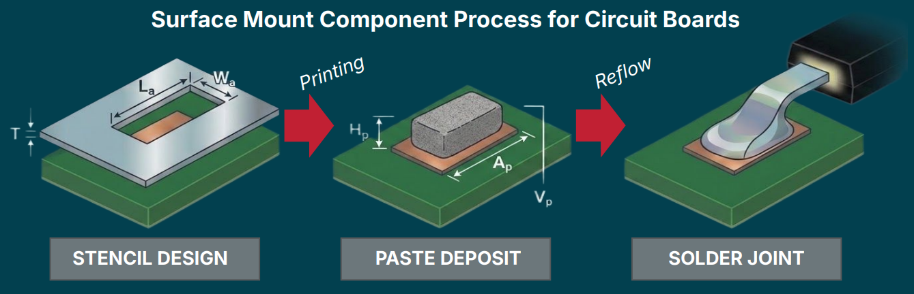
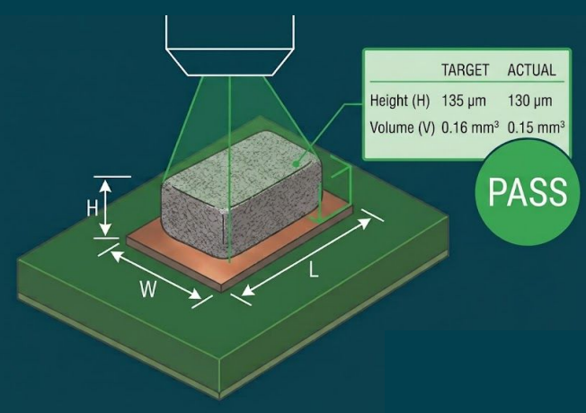
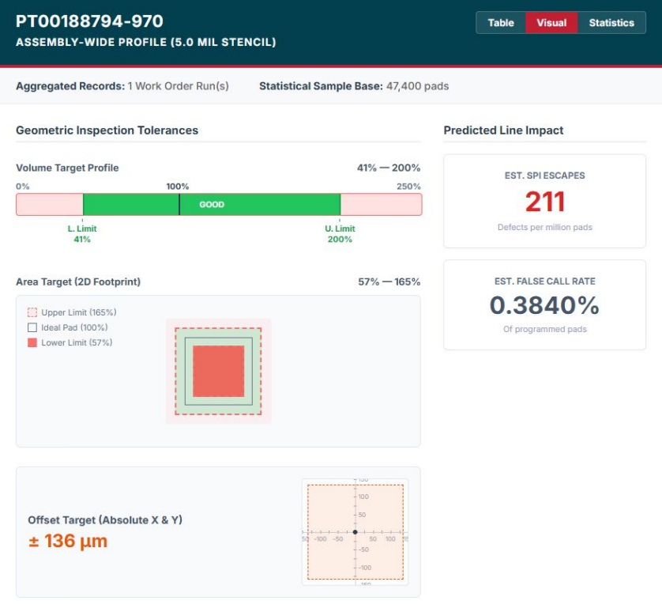
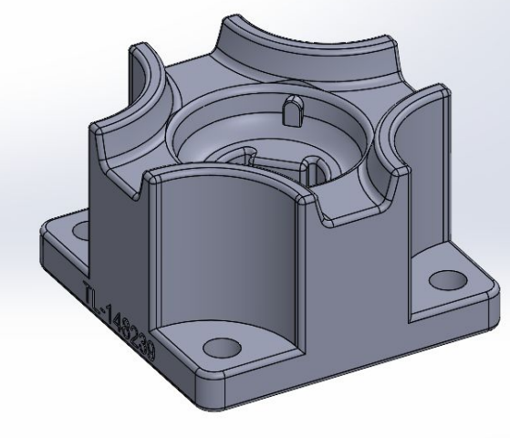
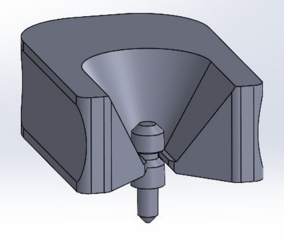
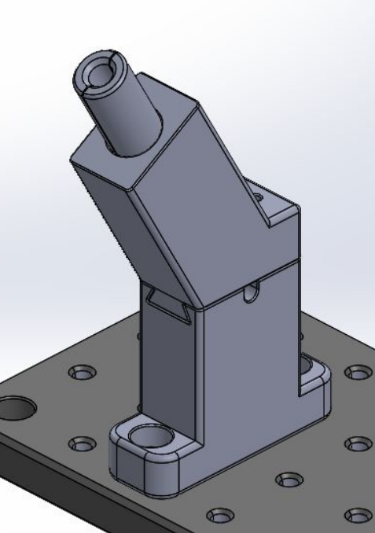
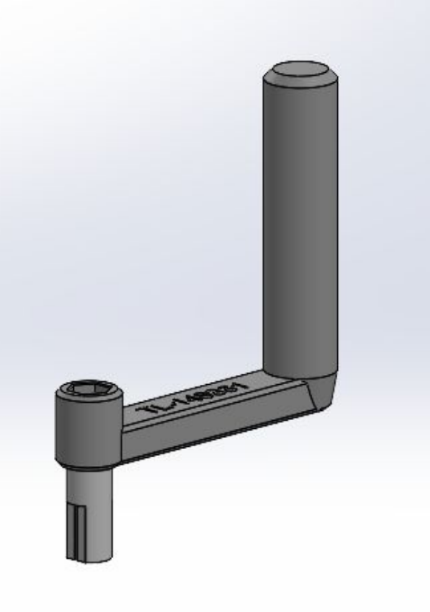

Plexus Process Engineering Internship
1. SPI Optimization & Data Analytics Application
Process Background: Surface Mount Technology (SMT) assembly relies on three core stages: paste printing, component placement, and reflow soldering. A Solder Paste Inspector (SPI) is used right after printing to measure paste volume, height, and area before components are placed.
The Engineering Problem: Standard SPI error flags are frequently uninformative because inspection tolerances are often imprecise, leading to unnecessary production line stoppages or undetected flaws.
Data-Driven Solution: Developed an interactive SPI Optimization Application built with Google Apps Script and Gemini AI to correlate raw measurements directly with actual defect results. The tool ingests work order (WO) SPI and defect records, calculates optimal parameters to minimize Type I errors (false calls) and Type II errors (escapes), and builds a robust historical defect database filterable by individual packages or assembly-wide profiles.


Solder Paste Inspection (SPI)
Laser-based optical measurement of paste volume, area, and offset dimensions immediately following printing.

Optimization Dashboard UI
Custom web application interface displaying assembly-wide inspection profiles, tolerance targets, and predicted defect line impact.
Quantified Impact (Sample of 470,000 components):
- 71.65% reduction in false calls using assembly-wide optimized settings.
- 87% reduction in defect escapes using package-specific parameters.
2. Custom Manufacturing Tooling
Used SolidWorks to design and fabricate a variety of specialized assembly tools aimed at minimizing product variation, enhancing output efficiency, and mitigating operator safety risks.

IV Cap Assembly Tool
Housing to assist in assembly of the top of an IV stand and poka yoke orientation.

Guide Pin & Removal Tool
Small pins used to align an acrylic viewport on a vacuum pump before gluing, and a removal tool to pull them out afterward.

Syringe Alignment Fixture
3-piece fixture used to align the tip of a syringe to the center of tubing on an infusion pump for testing.

Valve Rotation Bit
Custom bit to allow rotation of a pneumatic valve as required by assembly. Custom handle for rotation, also compatible with with standard 1/2" wrenches.
3. Engineering Key Takeaways
- Prioritizing High-Impact Actions: Focusing efforts where process variation is highest, given the countless potential paths toward manufacturing improvements.
- Design Balance: Striking an optimal balance between manufacturability, operator usability, and long-term effectiveness.
- Cross-Functional Execution: Leveraging clear communication and structured organization to keep multi-disciplinary teams aligned on project goals.